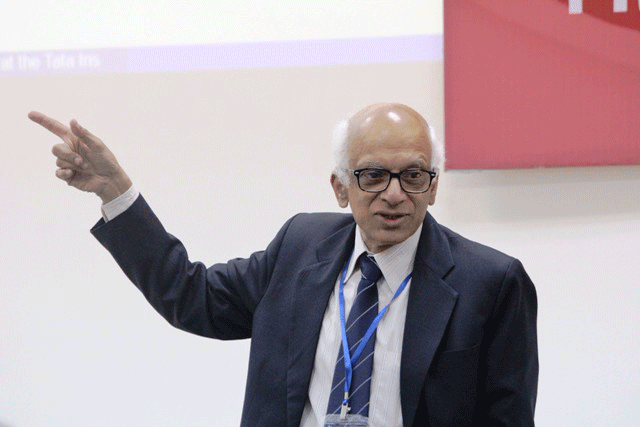
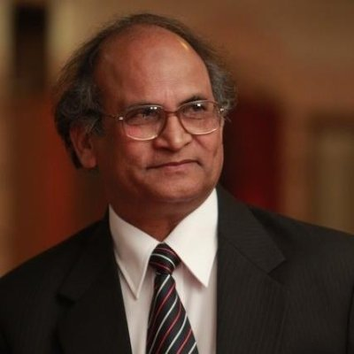
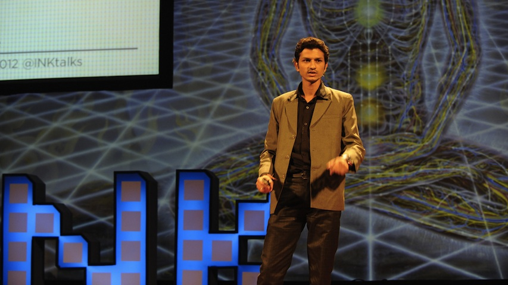
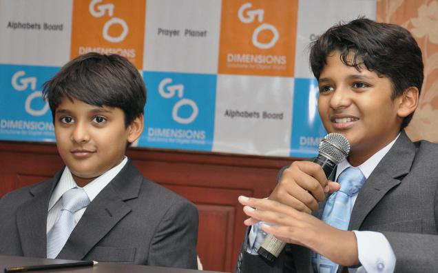

-

Padma Shri MS Raghunathan
M. S. (Madabusi Santanam) Raghunathan is an eminent Indian mathematician. He is currently Head of the National Centre for Mathematics, Indian Institute of Technology, Mumbai.Formerly Professor of eminence at TIFR in Homi Bhabha Chair.[1] Raghunathan received his PhD in Mathematics from (TIFR), University of Mumbai; his advisor was M. S. Narasimhan. Raghunathan is a Fellow of the Royal Society, of the Third World Academy of Sciences, and of the American Mathematical Society[2] and a recipient of the civilian honour of Padma Shri.
Date:31st October Saturday
Time: 3:30pm
Venue: Chanakya Hall NITC
-

Diwakar
Have you ever wished to have a live experience with engineering ? To watch humanoid robots perform in front of your eyes? To extend your horizon of knowledge beyond paperbacks ? Tathva opens to you the opportunity you were waiting for. Get ready to illuminate yourself . Presenting before you Manav -the first 3-D printed humanoid robot in India
Date:31st October Saturday
Time: 5:00pm-6:00pm
Venue: Auditorium NITC
-

Dr Zahid Hussain Khan
Dr. Zahid Husain Khan has been a Full Professor of Physics in Jamia Millia Islamia - Central University,New Delhi, India from November 1994 to January 2015, where he served for more than 39 years. He obtained Ph.D. (1975), M.Phil. (1971), M.Sc. (1969) and B.Sc. (1967) degrees from Aligarh Muslim University, Aligarh, India. His research interests are primarily in molecular and laser spectroscopy.
Following declaration of 2015 as the International Year of Light and Light-based Technologies (IYL 2015), the UNESCO nominated Prof. Khan as a National Focal Point for India. He is also a member of the Steering Committee of the International Working Group on Ibn Al-Haytham, based in Paris.
Date:30th October Friday
Time: 10am
Venue: Chanakya Hall NITC
-

Sourabh Kaushal
Sourabh Kaushal is researching space debris mitigation and the development of a space elevator system(The transportation system from Earth into Deep Space). He also proposed new methods to mitigate space debrisSourabh worked with Google Lunar X prize team-Team Indus as a System Engineer. He received "Dr. Kalpana Chawla Young Scientist Award", Runner Up "Jerome Pearson Award 2010" by ISEC, USA ," finalist of MIT TR35 Young Innovator Award and nominated for "Jerome Lederer Space Safety Award 2013" by IAASS, Received "Young Innovator Award 2013" by Indira International Innovation Summit, India.
Date:31st October Saturday
Time: 10am
Venue: Chanakya Hall NITC
-

Shravan and Sanjay
Shravan, 15, is the president and Sanjay, 14, is the CEO of Go Dimensions, an app development unit that they founded two years ago from their bedroom in their home in Chennai. Shravan Kumaran and his younger sibling Sanjay Kumaran are perhaps India's youngest entrepreneurs. In the past two years the two have developed eleven apps that are available on the Apple App Store and Google's Android Play Store. The apps have received over 35,000 downloads.
Their top apps include Catch Me Cop ,Alphabet Board, Colour Pallete, Prayer Planet etc.
Date:30th October Saturday
Time: 4pm
Venue: Chanakya Hall NITC